install.packages("tidyverse")
install.packages("readxl")
install.packages("janitor")
install.packages("patchwork")
install.packages("gtsummary")
install.packages("flextable")
install.packages("officer")
install.packages("gt")Module 6. Trực quan hóa Dữ liệu và Viết Kết quả Nghiên cứu
Tổng quan Module
TipLearning Outcomes
Sau khi hoàn thành Module 6, học viên có thể:
- Hiểu vai trò của trực quan hóa dữ liệu trong nghiên cứu khoa học
- Tạo biểu đồ phân phối bằng
ggplot2 - Tạo biểu đồ so sánh nhóm
- Tạo biểu đồ quan hệ giữa các biến
- Tạo correlation heatmap
- Tạo biểu đồ Likert dạng horizontal stacked bar
- Kết hợp nhiều biểu đồ bằng
patchwork - Tạo bảng kết quả bằng
gtsummaryvàflextable - Xuất hình ảnh chất lượng cao
- Viết phần Results dựa trên output từ R
- Viết figure captions và table notes theo chuẩn học thuật
NoteModule Logic
Module này trả lời câu hỏi:
Làm thế nào để chuyển kết quả phân tích từ R thành hình, bảng và đoạn viết kết quả có thể dùng trong báo cáo hoặc bài báo khoa học?
Workflow:
Dữ liệu sạch
↓
Kết quả mô tả
↓
Kết quả hồi quy
↓
Kết quả SEM
↓
Hình ảnh
↓
Bảng biểu
↓
Viết kết quả
↓
Báo cáo sẵn sàng xuất bản6.1 Why Visualization Matters?
NoteKnowledge Notes
What?
Data visualization là quá trình biểu diễn dữ liệu bằng hình ảnh như biểu đồ, bảng, heatmap hoặc network.
Why?
Visualization giúp:
- Hiểu dữ liệu nhanh hơn
- Phát hiện outliers
- Nhìn thấy patterns
- Truyền đạt kết quả rõ ràng hơn
- Tăng tính thuyết phục của bài báo hoặc báo cáo
When?
Dùng visualization ở cả ba giai đoạn:
- Data exploration
- Analysis interpretation
- Research communication
How do we use it in research?
Hình và bảng thường xuất hiện trong:
- Results section
- Conference presentation
- Journal article
- Thesis chapter
- Policy report
ImportantResearch Application
Trong nghiên cứu giáo dục, UTAUT, SEM hoặc PhD survey, visualization có thể dùng để trình bày:
- Đặc điểm mẫu
- Phân phối biến chính
- So sánh nhóm
- Tương quan giữa các biến
- Kết quả hồi quy
- Kết quả SEM
- Likert responses
WarningCommon Mistakes
Người học thường mắc lỗi:
- Dùng biểu đồ chỉ để trang trí
- Không đặt tên trục rõ ràng
- Không ghi đơn vị đo
- Dùng quá nhiều màu
- Không có figure caption
- Dùng hình độ phân giải thấp cho bài báo
- Diễn giải hình vượt quá dữ liệu
6.2 Load Packages
NoteKnowledge Notes
Main packages
ggplot2: tạo biểu đồpatchwork: ghép nhiều biểu đồgtsummary: tạo bảng học thuậtflextable: tạo bảng báo cáo Wordofficer: xuất Wordreadxl: đọc Exceljanitor: làm sạch tên biến
Install Packages
Load Packages
library(tidyverse)
library(readxl)
library(janitor)
library(patchwork)
library(gtsummary)
library(flextable)
library(officer)
library(gt)6.3 Import Clean Dataset
NoteKnowledge Notes
What?
Module 6 sử dụng dữ liệu sạch đã được tạo ở Module 2.
How?
Ưu tiên đọc file:
output/03_Clean_Data.xlsxNếu file này chưa tồn tại, hệ thống sẽ đọc sheet 03_Clean_Data từ file demo ban đầu.
if (file.exists("output/03_Clean_Data.xlsx")) {
data <- read_excel("output/03_Clean_Data.xlsx")
} else {
data <- read_excel(
"data/FPT_PolySchool_R_Training_Demo_Dataset.xlsx",
sheet = "03_Clean_Data"
)
}
data <- data |>
clean_names()Check Data
glimpse(data)Rows: 300
Columns: 49
$ id <chr> "ST001", "ST002", "ST003", "ST004", "ST005", "ST006", "…
$ gender <chr> "Female", "Male", "Female", "Male", "Female", "Female",…
$ age <dbl> 24, 20, 22, 21, 24, 18, 24, 19, 23, 20, 24, 23, 24, 22,…
$ major <chr> "Graphic Design", "Digital Marketing", "Digital Marketi…
$ year_study <dbl> 3, 2, 1, 3, 2, 1, 2, 3, 3, 1, 3, 2, 2, 2, 2, 1, 1, 3, 1…
$ campus <chr> "Da Nang", "Da Nang", "Ho Chi Minh", "Da Nang", "Can Th…
$ gpa <dbl> 7.87, 5.76, 7.60, 6.17, 8.83, 7.35, 6.60, 7.83, 7.50, 6…
$ internet_hours <dbl> 7.2, 3.9, 6.3, 8.3, 3.5, 6.1, 6.9, 7.1, 3.2, 5.2, 6.0, …
$ smartphone_use <dbl> 5, 3, 1, 1, 1, 1, 1, 1, 3, 3, 4, 4, 2, 4, 3, 2, 3, 4, 1…
$ lms_use <dbl> 4, 3, 2, 3, 5, 2, 3, 2, 3, 1, 2, 1, 2, 1, 4, 5, 4, 4, 5…
$ ai_experience <dbl> 0, 2, 3, 1, 2, 1, 3, 3, 0, 2, 4, 2, 4, 3, 2, 4, 2, 1, 1…
$ pe1 <dbl> 3, 3, 4, 4, 4, 3, 4, 3, 4, 3, 4, 5, 4, 4, 4, 4, 4, 3, 2…
$ pe2 <dbl> 4, 2, 4, 3, 4, 3, 4, 4, 5, 2, 4, 2, 3, 3, 2, 4, 4, 2, 2…
$ pe3 <dbl> 3, 1, 4, 3, 4, 2, 4, 5, 4, 3, 3, 2, 2, 4, 3, 4, 5, 4, 3…
$ pe4 <dbl> 2, 3, 3, 3, 3, 2, 3, 3, 5, 4, 4, 5, 3, 4, 4, 3, 5, 4, 4…
$ ee1 <dbl> 3, 4, 2, 4, 5, 4, 3, 4, 4, 4, 3, 4, 4, 4, 3, 3, 4, 3, 4…
$ ee2 <dbl> 4, 3, 3, 3, 3, 3, 4, 5, 3, 3, 4, 4, 3, 5, 3, 3, 4, 2, 2…
$ ee3 <dbl> 4, 4, 3, 3, 4, 4, 4, 5, 4, 4, 4, 4, 4, 5, 5, 4, 3, 4, 4…
$ ee4 <dbl> 2, 3, 3, 4, 2, 4, 4, 3, 3, 5, 3, 3, 3, 4, 4, 3, 4, 3, 3…
$ si1 <dbl> 3, 3, 4, 2, 2, 2, 2, 5, 5, 3, 1, 3, 2, 4, 2, 1, 2, 4, 3…
$ si2 <dbl> 4, 1, 5, 1, 1, 3, 4, 3, 4, 3, 1, 3, 3, 2, 2, 2, 2, 4, 3…
$ si3 <dbl> 3, 1, 4, 2, 3, 2, 1, 3, 5, 3, 2, 4, 2, 3, 4, 3, 3, 2, 2…
$ si4 <dbl> 3, 4, 4, 3, 2, 2, 4, 4, 5, 2, 1, 2, 3, 3, 3, 2, 3, 3, 2…
$ fc1 <dbl> 3, 2, 3, 4, 1, 4, 4, 2, 2, 1, 3, 3, 4, 4, 4, 4, 3, 4, 4…
$ fc2 <dbl> 4, 3, 3, 2, 2, 4, 4, 2, 4, 3, 2, 2, 3, 4, 4, 3, 3, 4, 5…
$ fc3 <dbl> 4, 2, 3, 4, 3, 3, 5, 2, 3, 1, 2, 3, 2, 2, 4, 3, 4, 4, 5…
$ fc4 <dbl> 4, 2, 3, 3, 4, 4, 5, 2, 3, 1, 2, 4, 2, 3, 3, 5, 2, 4, 4…
$ dr1 <dbl> 3, 5, 4, 4, 4, 1, 3, 5, 4, 4, 4, 5, 4, 2, 5, 3, 4, 4, 4…
$ dr2 <dbl> 4, 5, 3, 2, 4, 2, 4, 4, 4, 2, 4, 4, 3, 2, 5, 3, 2, 3, 4…
$ dr3 <dbl> 4, 3, 4, 3, 4, 5, 2, 4, 2, 2, 5, 4, 5, 3, 4, 5, 4, 4, 4…
$ dr4 <dbl> 2, 4, 3, 2, 4, 3, 3, 4, 4, 2, 5, 3, 4, 3, 3, 3, 3, 4, 2…
$ tr1 <dbl> 3, 5, 5, 4, 4, 4, 4, 4, 4, 2, 5, 3, 5, 3, 4, 4, 4, 5, 3…
$ tr2 <dbl> 3, 3, 5, 4, 5, 5, 4, 5, 4, 3, 5, 4, 5, 3, 3, 5, 2, 5, 4…
$ tr3 <dbl> 4, 4, 4, 3, 3, 3, 5, 4, 3, 5, 5, 5, 3, 4, 4, 4, 4, 4, 3…
$ tr4 <dbl> 3, 5, 3, 4, 4, 3, 5, 4, 4, 3, 5, 4, 4, 4, 4, 4, 4, 5, 4…
$ bi1 <dbl> 4, 5, 4, 5, 4, 4, 5, 5, 5, 3, 5, 5, 4, 5, 4, 4, 5, 3, 5…
$ bi2 <dbl> 5, 5, 4, 3, 5, 5, 4, 4, 5, 3, 5, 5, 5, 4, 5, 5, 4, 5, 4…
$ bi3 <dbl> 5, 4, 5, 4, 5, 5, 4, 5, 5, 4, 5, 5, 5, 5, 5, 5, 5, 5, 5…
$ au1 <dbl> 3, 4, 3, 3, 4, 1, 3, 3, 5, 3, 3, 5, 5, 5, 4, 3, 5, 5, 5…
$ au2 <dbl> 4, 4, 3, 3, 4, 3, 4, 4, 4, 2, 3, 3, 3, 4, 5, 3, 4, 4, 5…
$ au3 <dbl> 3, 5, 4, 2, 3, 5, 4, 3, 5, 2, 3, 4, 5, 4, 3, 3, 4, 5, 5…
$ pe_mean <dbl> 3.00, 2.25, 3.75, 3.25, 3.75, 2.50, 3.75, 3.75, 4.50, 3…
$ ee_mean <dbl> 3.25, 3.50, 2.75, 3.50, 3.50, 3.75, 3.75, 4.25, 3.50, 4…
$ si_mean <dbl> 3.25, 2.25, 4.25, 2.00, 2.00, 2.25, 2.75, 3.75, 4.75, 2…
$ fc_mean <dbl> 3.75, 2.25, 3.00, 3.25, 2.50, 3.75, 4.50, 2.00, 3.00, 1…
$ dr_mean <dbl> 3.25, 4.25, 3.50, 2.75, 4.00, 2.75, 3.00, 4.25, 3.50, 2…
$ tr_mean <dbl> 3.25, 4.25, 4.25, 3.75, 4.00, 3.75, 4.50, 4.25, 3.75, 3…
$ bi_mean <dbl> 4.67, 4.67, 4.33, 4.00, 4.67, 4.67, 4.33, 4.67, 5.00, 3…
$ au_mean <dbl> 3.33, 4.33, 3.33, 2.67, 3.67, 3.00, 3.67, 3.33, 4.67, 2…6.4 Prepare Variables
NoteKnowledge Notes
What?
Các biểu đồ và bảng trong module này sử dụng các biến trung bình của construct.
Why?
Các biến như pe_mean, bi_mean, au_mean giúp trực quan hóa kết quả nghiên cứu ở cấp độ construct.
needed_mean_vars <- c(
"pe_mean", "ee_mean", "si_mean", "fc_mean",
"dr_mean", "tr_mean", "bi_mean", "au_mean"
)
if (!all(needed_mean_vars %in% names(data))) {
data <- data |>
mutate(
pe_mean = rowMeans(pick(pe1, pe2, pe3, pe4), na.rm = TRUE),
ee_mean = rowMeans(pick(ee1, ee2, ee3, ee4), na.rm = TRUE),
si_mean = rowMeans(pick(si1, si2, si3, si4), na.rm = TRUE),
fc_mean = rowMeans(pick(fc1, fc2, fc3, fc4), na.rm = TRUE),
dr_mean = rowMeans(pick(dr1, dr2, dr3, dr4), na.rm = TRUE),
tr_mean = rowMeans(pick(tr1, tr2, tr3, tr4), na.rm = TRUE),
bi_mean = rowMeans(pick(bi1, bi2, bi3), na.rm = TRUE),
au_mean = rowMeans(pick(au1, au2, au3), na.rm = TRUE)
)
}Convert Grouping Variables
data <- data |>
mutate(
gender = as.factor(gender),
major = as.factor(major),
campus = as.factor(campus)
)6.5 Grammar of Graphics
NoteKnowledge Notes
What?
ggplot2 dựa trên Grammar of Graphics.
Một biểu đồ thường gồm:
Data
+
Aesthetics
+
Geometry
+
ThemeBasic structure
ggplot(data, aes(x = variable_x, y = variable_y)) +
geom_point()
TipKey Points
Trong ggplot2:
datalà dữ liệuaes()là ánh xạ thẩm mỹgeom_là loại hìnhlabs()đặt tiêu đề và nhãntheme_chỉnh giao diện
6.6 Distribution Plot
NoteKnowledge Notes
What?
Histogram dùng để xem phân phối của một biến định lượng.
When?
Dùng khi cần kiểm tra:
- Shape
- Skewness
- Outliers
- Central tendency
BI Distribution
fig_bi_hist <- ggplot(data, aes(x = bi_mean)) +
geom_histogram(bins = 20) +
labs(
title = "Distribution of Behavioral Intention",
x = "Behavioral Intention",
y = "Frequency"
) +
theme_minimal()
fig_bi_hist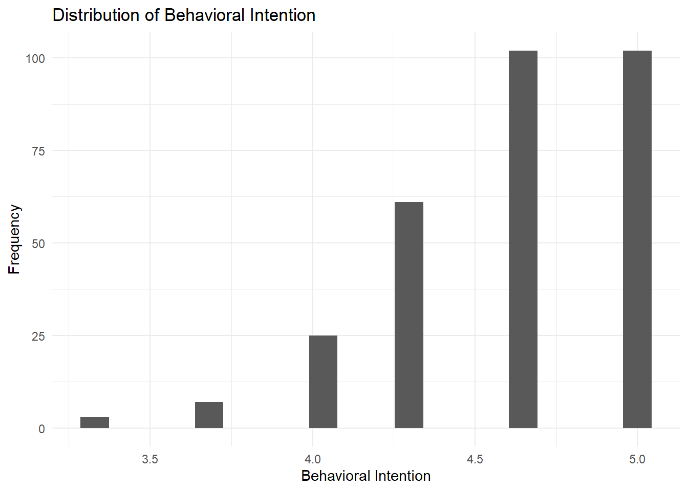
AU Distribution
fig_au_hist <- ggplot(data, aes(x = au_mean)) +
geom_histogram(bins = 20) +
labs(
title = "Distribution of Actual Use",
x = "Actual Use",
y = "Frequency"
) +
theme_minimal()
fig_au_hist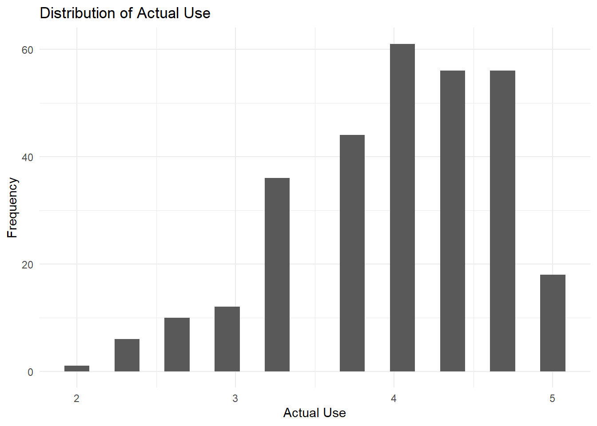
ImportantResearch Application
Histogram giúp kiểm tra xem biến outcome có phân phối hợp lý không trước khi chạy hồi quy hoặc SEM.
6.7 Group Comparison Plots
NoteKnowledge Notes
What?
Boxplot dùng để so sánh phân phối của biến định lượng giữa các nhóm.
When?
Dùng khi cần so sánh:
BI_mean by Gender
BI_mean by Major
GPA by CampusBI by Gender
fig_bi_gender <- ggplot(data, aes(x = gender, y = bi_mean)) +
geom_boxplot() +
labs(
title = "Behavioral Intention by Gender",
x = "Gender",
y = "Behavioral Intention"
) +
theme_minimal()
fig_bi_gender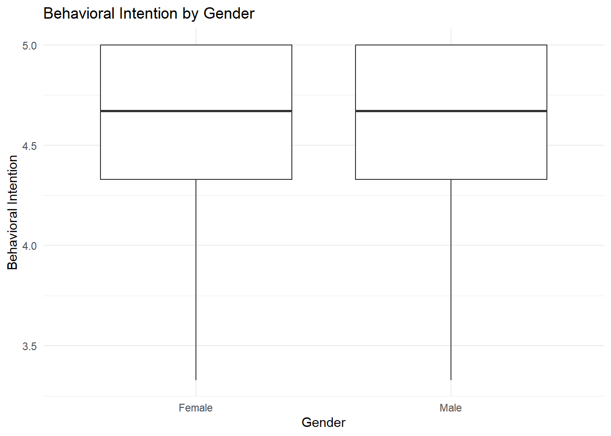
BI by Major
fig_bi_major <- ggplot(data, aes(x = major, y = bi_mean)) +
geom_boxplot() +
labs(
title = "Behavioral Intention by Major",
x = "Major",
y = "Behavioral Intention"
) +
theme_minimal() +
theme(
axis.text.x = element_text(
angle = 45,
hjust = 1
)
)
fig_bi_major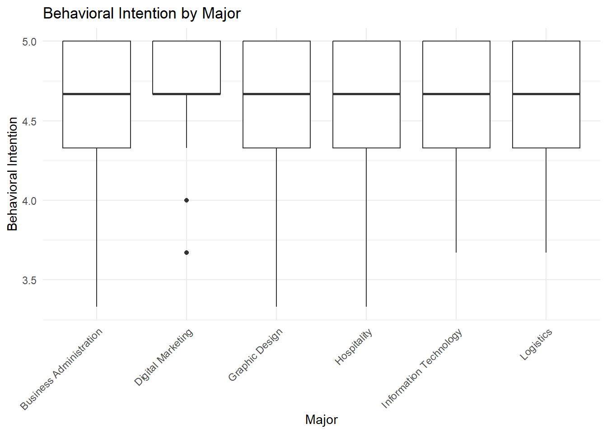
WarningCommon Mistakes
Không nên kết luận nhóm khác nhau chỉ dựa trên boxplot.
Boxplot giúp khám phá dữ liệu. Muốn kiểm định cần dùng t-test hoặc ANOVA.
6.8 Relationship Plots
NoteKnowledge Notes
What?
Scatterplot dùng để xem mối quan hệ giữa hai biến định lượng.
When?
Dùng trước hồi quy hoặc tương quan.
How?
Có thể thêm đường hồi quy bằng:
geom_smooth(method = "lm")PE and BI
fig_pe_bi <- ggplot(data, aes(x = pe_mean, y = bi_mean)) +
geom_point() +
geom_smooth(method = "lm", se = TRUE) +
labs(
title = "Relationship between Performance Expectancy and Behavioral Intention",
x = "Performance Expectancy",
y = "Behavioral Intention"
) +
theme_minimal()
fig_pe_bi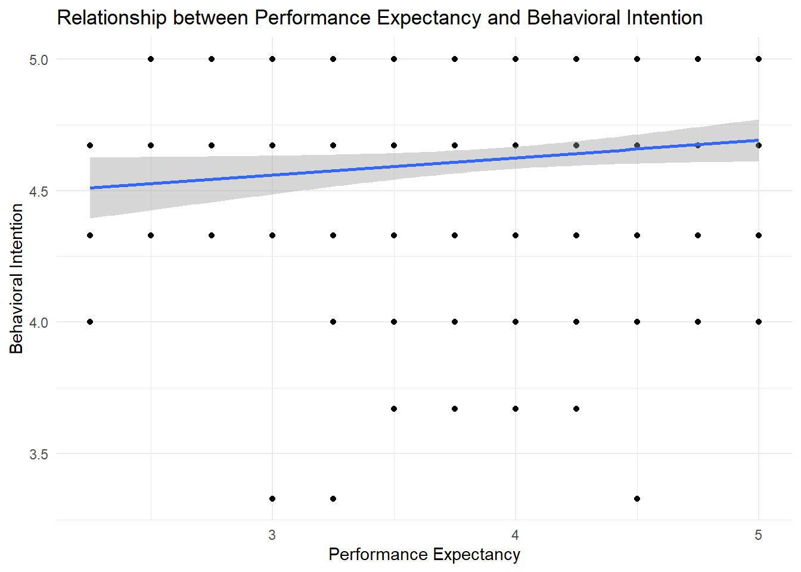
Trust and BI
fig_tr_bi <- ggplot(data, aes(x = tr_mean, y = bi_mean)) +
geom_point() +
geom_smooth(method = "lm", se = TRUE) +
labs(
title = "Relationship between Trust and Behavioral Intention",
x = "Trust",
y = "Behavioral Intention"
) +
theme_minimal()
fig_tr_bi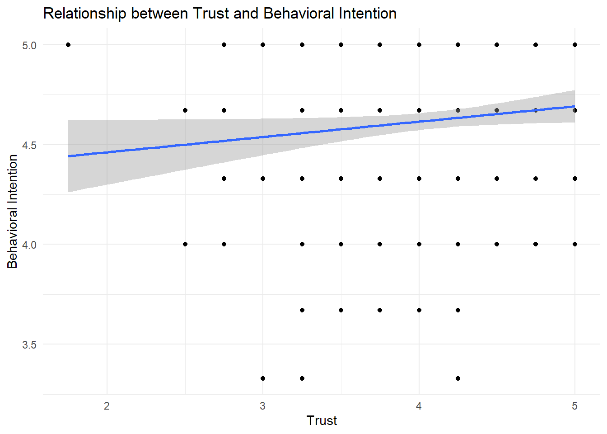
WarningCommon Mistakes
Scatterplot cho thấy association, không chứng minh causation.
6.9 Correlation Heatmap
NoteKnowledge Notes
What?
Correlation heatmap giúp trình bày ma trận tương quan bằng màu sắc.
When?
Dùng khi có nhiều biến định lượng cần xem tương quan.
Prepare Correlation Data
corr_data <- data |>
select(
pe_mean,
ee_mean,
si_mean,
fc_mean,
dr_mean,
tr_mean,
bi_mean,
au_mean
)
corr_matrix <- cor(
corr_data,
use = "pairwise.complete.obs"
)
corr_matrix pe_mean ee_mean si_mean fc_mean dr_mean
pe_mean 1.000000000 0.03096087 0.001548586 0.05206441 0.26820461
ee_mean 0.030960872 1.00000000 0.030652840 0.06019207 0.12765180
si_mean 0.001548586 0.03065284 1.000000000 -0.11223155 -0.02088038
fc_mean 0.052064412 0.06019207 -0.112231552 1.00000000 0.20233709
dr_mean 0.268204611 0.12765180 -0.020880375 0.20233709 1.00000000
tr_mean 0.204455140 0.04038728 -0.006995865 0.05859718 0.21676083
bi_mean 0.116093664 0.02961726 0.044374800 0.14287948 0.22087938
au_mean 0.046930878 0.01875491 -0.192161325 0.12809954 0.07850308
tr_mean bi_mean au_mean
pe_mean 0.204455140 0.11609366 0.04693088
ee_mean 0.040387285 0.02961726 0.01875491
si_mean -0.006995865 0.04437480 -0.19216132
fc_mean 0.058597181 0.14287948 0.12809954
dr_mean 0.216760834 0.22087938 0.07850308
tr_mean 1.000000000 0.11521647 0.08073696
bi_mean 0.115216473 1.00000000 0.08655022
au_mean 0.080736963 0.08655022 1.00000000Convert to Long Format
corr_long <- as.data.frame(as.table(corr_matrix)) |>
rename(
variable_1 = Var1,
variable_2 = Var2,
correlation = Freq
)Heatmap
fig_corr_heatmap <- ggplot(
corr_long,
aes(x = variable_1, y = variable_2, fill = correlation)
) +
geom_tile() +
geom_text(aes(label = round(correlation, 2)), size = 3) +
labs(
title = "Correlation Heatmap",
x = NULL,
y = NULL,
fill = "r"
) +
theme_minimal() +
theme(
axis.text.x = element_text(
angle = 45,
hjust = 1
)
)
fig_corr_heatmap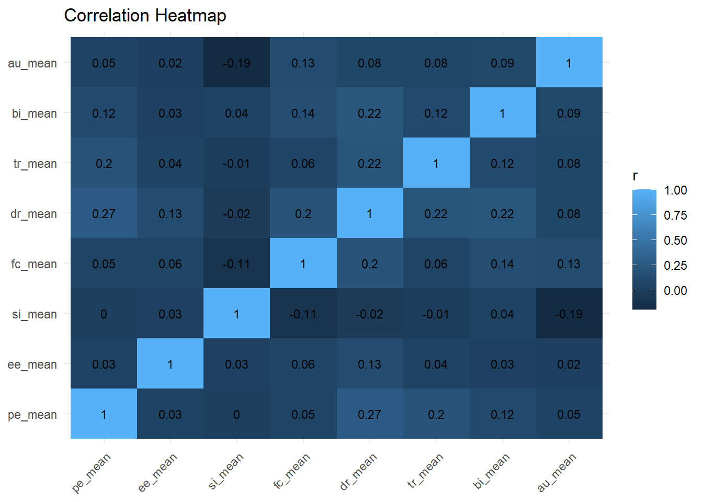
ImportantResearch Application
Correlation heatmap phù hợp cho:
- UTAUT variables
- SEM constructs
- Psychological scales
- Survey-based research
6.10 Likert Visualization
NoteKnowledge Notes
What?
Likert visualization giúp trình bày phân bố câu trả lời cho các item khảo sát.
When?
Dùng khi dữ liệu có các câu hỏi thang đo 1–5.
Why?
Biểu đồ Likert giúp người đọc thấy mức độ đồng ý, trung lập và không đồng ý.
Select Likert Items
likert_items <- data |>
select(pe1, pe2, pe3, pe4)Long Format
likert_long <- likert_items |>
pivot_longer(
cols = everything(),
names_to = "item",
values_to = "response"
) |>
mutate(
response = factor(
response,
levels = 1:5,
labels = c(
"Strongly disagree",
"Disagree",
"Neutral",
"Agree",
"Strongly agree"
)
)
)Horizontal Stacked Likert Bar
likert_summary <- likert_long |>
count(item, response) |>
group_by(item) |>
mutate(percent = n / sum(n) * 100) |>
ungroup()
fig_likert <- ggplot(
likert_summary,
aes(x = percent, y = item, fill = response)
) +
geom_col() +
labs(
title = "Likert Responses for Performance Expectancy Items",
x = "Percent",
y = "Item",
fill = "Response"
) +
theme_minimal()
fig_likert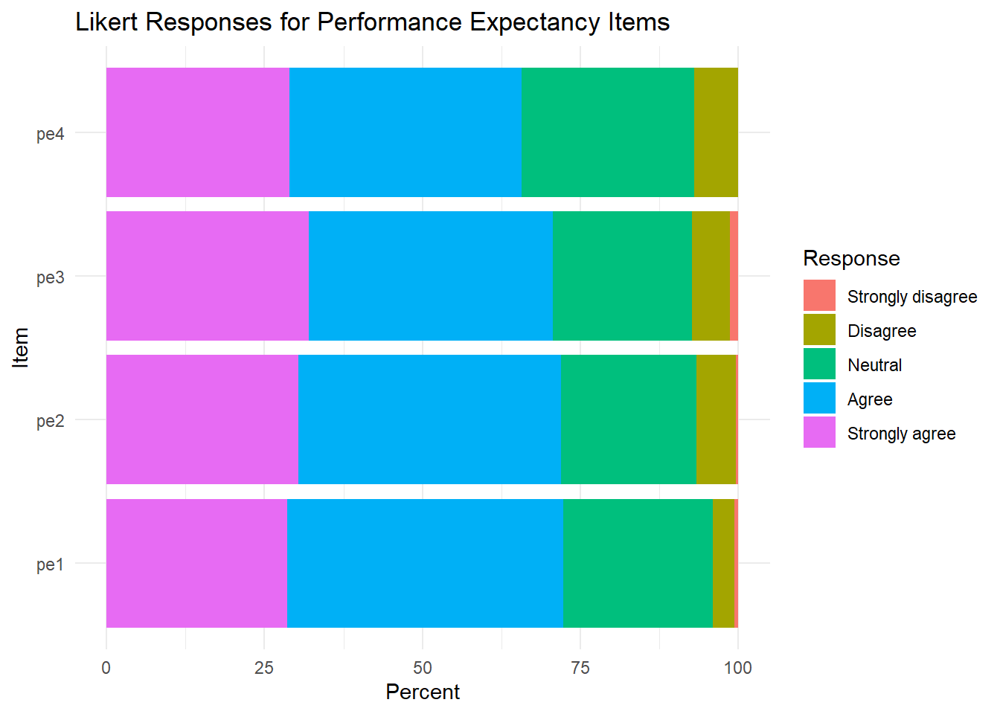
ImportantResearch Application
Likert plots rất phù hợp cho:
- UTAUT
- TPB
- TAM
- Teacher survey
- Student survey
- Perception studies
6.11 Combining Figures with Patchwork
NoteKnowledge Notes
What?
patchwork giúp ghép nhiều biểu đồ thành một figure panel.
Why?
Trong bài báo, nhiều hình thường được trình bày thành Figure 1A, 1B, 1C.
Distribution Panel
fig_distribution <- fig_bi_hist + fig_au_hist
fig_distribution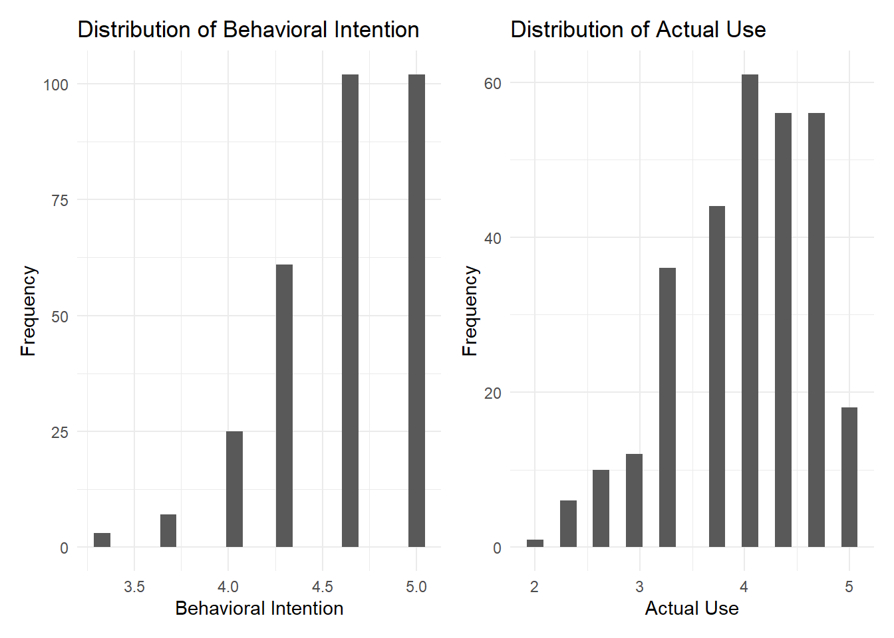
Group Comparison Panel
fig_group_comparison <- fig_bi_gender + fig_bi_major
fig_group_comparison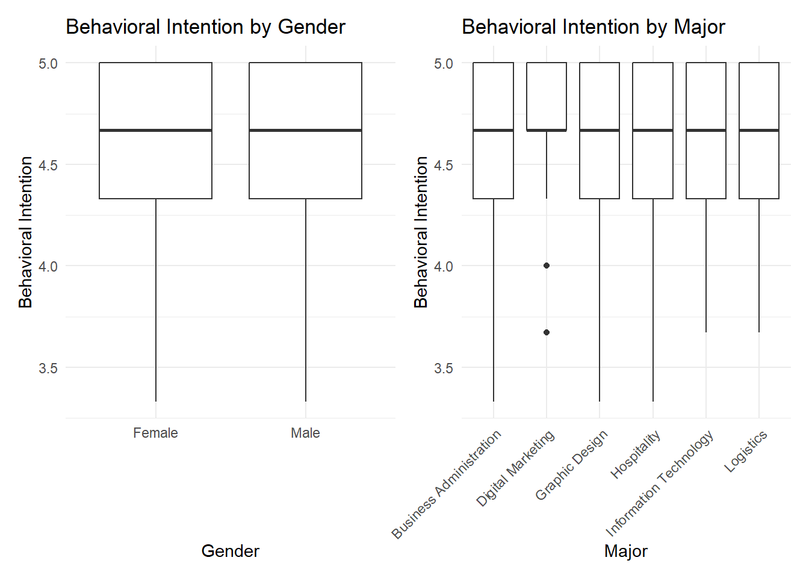
Relationship Panel
fig_relationships <- fig_pe_bi + fig_tr_bi
fig_relationships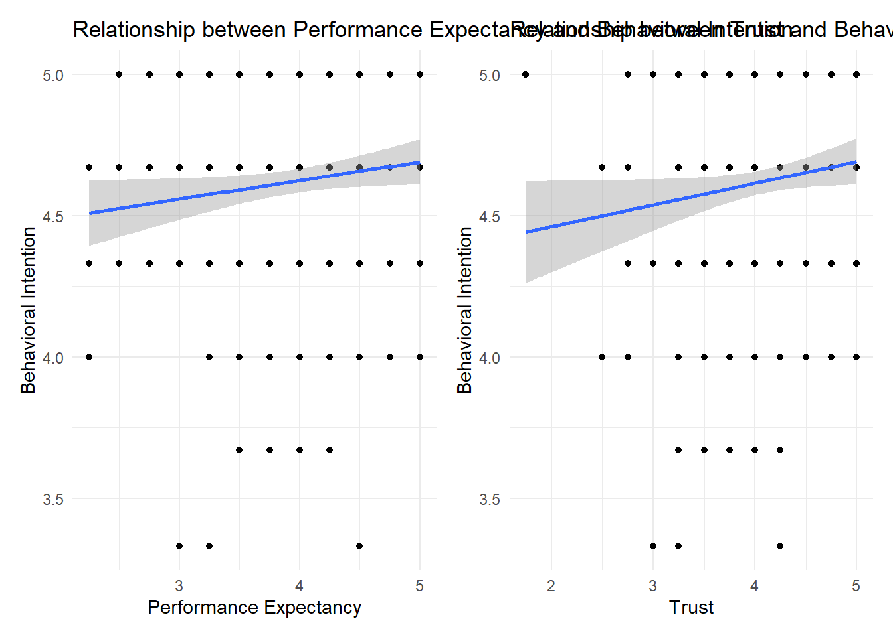
6.12 Publication-ready Tables
NoteKnowledge Notes
What?
Bảng học thuật nên rõ ràng, nhất quán và có thể xuất sang Word hoặc HTML.
Common tools
gtsummarygtflextable
Table 1
table_1 <- data |>
select(
gender,
age,
major,
campus,
gpa,
internet_hours,
pe_mean,
ee_mean,
si_mean,
fc_mean,
dr_mean,
tr_mean,
bi_mean,
au_mean
) |>
tbl_summary(
statistic = list(
all_continuous() ~ "{mean} ({sd})",
all_categorical() ~ "{n} ({p}%)"
),
digits = all_continuous() ~ 2
) |>
bold_labels()
table_1| Characteristic | N = 3001 |
|---|---|
| gender | |
| Female | 168 (56%) |
| Male | 132 (44%) |
| age | |
| 18 | 33 (11%) |
| 19 | 56 (19%) |
| 20 | 40 (13%) |
| 21 | 39 (13%) |
| 22 | 48 (16%) |
| 23 | 44 (15%) |
| 24 | 40 (13%) |
| major | |
| Business Administration | 53 (18%) |
| Digital Marketing | 59 (20%) |
| Graphic Design | 55 (18%) |
| Hospitality | 49 (16%) |
| Information Technology | 47 (16%) |
| Logistics | 37 (12%) |
| campus | |
| Can Tho | 71 (24%) |
| Da Nang | 75 (25%) |
| Ha Noi | 80 (27%) |
| Ho Chi Minh | 74 (25%) |
| gpa | 7.25 (0.79) |
| internet_hours | 5.34 (1.84) |
| pe_mean | 3.93 (0.65) |
| ee_mean | 3.58 (0.63) |
| si_mean | 2.97 (0.74) |
| fc_mean | 3.35 (0.73) |
| dr_mean | 3.80 (0.73) |
| tr_mean | 4.07 (0.56) |
| bi_mean | |
| 3.33 | 3 (1.0%) |
| 3.67 | 7 (2.3%) |
| 4 | 25 (8.3%) |
| 4.33 | 61 (20%) |
| 4.67 | 102 (34%) |
| 5 | 102 (34%) |
| au_mean | 3.99 (0.64) |
| 1 n (%); Mean (SD) | |
Summary Table with Flextable
summary_table <- data |>
summarise(
n = n(),
mean_bi = mean(bi_mean, na.rm = TRUE),
sd_bi = sd(bi_mean, na.rm = TRUE),
mean_au = mean(au_mean, na.rm = TRUE),
sd_au = sd(au_mean, na.rm = TRUE),
mean_pe = mean(pe_mean, na.rm = TRUE),
sd_pe = sd(pe_mean, na.rm = TRUE),
mean_tr = mean(tr_mean, na.rm = TRUE),
sd_tr = sd(tr_mean, na.rm = TRUE)
)
summary_table |>
flextable() |>
autofit()n | mean_bi | sd_bi | mean_au | sd_au | mean_pe | sd_pe | mean_tr | sd_tr |
|---|---|---|---|---|---|---|---|---|
300 | 4.6205 | 0.3704541 | 3.993467 | 0.6350898 | 3.933333 | 0.6543951 | 4.071667 | 0.5560827 |
6.13 Writing Results Section
NoteKnowledge Notes
What?
Results section trình bày kết quả phân tích một cách rõ ràng, có logic và không suy diễn quá mức.
Recommended order
Sample characteristics
↓
Descriptive statistics
↓
Group comparison
↓
Regression results
↓
SEM results
↓
Summary of hypothesesAutomatic Values from R
n_sample <- nrow(data)
bi_mean_value <- mean(data$bi_mean, na.rm = TRUE)
bi_sd_value <- sd(data$bi_mean, na.rm = TRUE)
au_mean_value <- mean(data$au_mean, na.rm = TRUE)
au_sd_value <- sd(data$au_mean, na.rm = TRUE)
n_sample[1] 300bi_mean_value[1] 4.6205bi_sd_value[1] 0.3704541au_mean_value[1] 3.993467au_sd_value[1] 0.6350898Descriptive Results Template
The sample consisted of [N] respondents. The average Behavioral Intention score was [M] (SD = [SD]), while the average Actual Use score was [M] (SD = [SD]). These results suggest that respondents generally reported [low/moderate/high] levels of intention and usage.Regression Results Template
A multiple linear regression was conducted to examine the predictors of Behavioral Intention. The model included Performance Expectancy, Effort Expectancy, Social Influence, Facilitating Conditions, Digital Readiness, and Trust as predictors. The results showed that the model explained [R2]% of the variance in Behavioral Intention.SEM Results Template
The structural model was assessed using path coefficients, R-squared values, and bootstrapping. The results showed that [predictor] significantly predicted Behavioral Intention, while Behavioral Intention significantly predicted Actual Use.
WarningCommon Mistakes
Không nên viết kết quả không có trong output.
Không nên dùng từ mạnh như:
proved
caused
confirmed definitivelynếu dữ liệu là khảo sát cắt ngang.
6.14 Figure Captions and Table Notes
NoteKnowledge Notes
What?
Figure caption giúp người đọc hiểu hình mà không cần đọc toàn bộ bài viết.
Good caption
Figure 1. Distribution of Behavioral Intention and Actual Use among respondents.Bad caption
Figure 1. Graph.Caption Examples
Figure 1. Distribution of Behavioral Intention and Actual Use scores.
Figure 2. Group comparison of Behavioral Intention by gender and academic major.
Figure 3. Relationship between Performance Expectancy, Trust, and Behavioral Intention.
Figure 4. Correlation heatmap of key UTAUT constructs.Table Note Example
Note. Values for continuous variables are reported as mean (standard deviation). Values for categorical variables are reported as n (%).6.15 Export Publication Figures
NoteKnowledge Notes
What?
Publication figures cần có độ phân giải cao.
Common settings
- PNG: 300 dpi
- TIFF: 600 dpi
- Width: 7–10 inches
- Height: 5–8 inches
Để tránh lỗi khi render website, các lệnh xuất hình được đặt eval: false.
Create Output Folder
dir.create("output", showWarnings = FALSE)Export PNG
ggsave(
"output/figure_distribution.png",
fig_distribution,
width = 10,
height = 5,
dpi = 300
)ggsave(
"output/figure_group_comparison.png",
fig_group_comparison,
width = 10,
height = 5,
dpi = 300
)ggsave(
"output/figure_relationships.png",
fig_relationships,
width = 10,
height = 5,
dpi = 300
)6.16 Export Tables to Word
NoteKnowledge Notes
What?
flextable và officer giúp xuất bảng sang Word.
When?
Dùng khi cần nộp báo cáo hoặc manuscript bằng Word.
doc <- read_docx()
doc <- doc |>
body_add_par("Table 1. Summary Statistics", style = "heading 1") |>
body_add_flextable(
summary_table |>
flextable() |>
autofit()
)
print(
doc,
target = "output/module6_summary_table.docx"
)6.17 Using AI for Results Writing
NoteKnowledge Notes
What?
AI có thể hỗ trợ viết Results section nhưng không thay thế trách nhiệm của nhà nghiên cứu.
Good uses
- Viết lại câu cho rõ ràng
- Kiểm tra logic diễn giải
- Chuyển output thành đoạn văn
- Rút gọn hoặc làm học thuật hơn
Bad uses
- Tự tạo số liệu
- Diễn giải quá mức
- Viết kết luận không dựa trên output
- Bỏ qua kiểm tra thống kê
Prompt Template
Based on the following R output, write an academic Results paragraph. Do not invent values. Report only the statistics provided. Use cautious academic language.Interpretation Check Prompt
Please check whether this interpretation is statistically accurate and whether it overclaims causality.Practice Exercise
ImportantPractice Exercise
Sử dụng bộ dữ liệu sạch, hãy thực hiện:
- Vẽ histogram cho
bi_mean. - Vẽ histogram cho
au_mean. - Vẽ boxplot
bi_meantheogender. - Vẽ boxplot
bi_meantheomajor. - Vẽ scatterplot giữa
pe_meanvàbi_mean. - Vẽ scatterplot giữa
tr_meanvàbi_mean. - Tạo correlation heatmap.
- Tạo horizontal Likert plot cho các item PE.
- Ghép nhiều hình bằng
patchwork. - Tạo Table 1.
- Viết một đoạn Results hoàn chỉnh.
- Viết figure caption cho ít nhất 3 hình.
Challenge
WarningChallenge
Nhiệm vụ
Biến các kết quả từ Module 3, Module 4 và Module 5 thành một bộ sản phẩm công bố gồm:
- One descriptive table
- One correlation heatmap
- One regression figure
- One Likert plot
- One Results paragraph
- One figure caption
TipSuggested Solution
Một bộ sản phẩm tốt nên có:
- Table 1 từ
gtsummary - Correlation heatmap từ
ggplot2 - Scatterplot với regression line
- Likert horizontal stacked bar
- Results paragraph dựa trên output thật
- Figure captions rõ ràng và tự giải thích được
Mini Project 6
ImportantMini Project 6
Chủ đề
Visualization and Academic Results Writing
Sản phẩm đầu ra
Học viên cần tạo:
Module6_Results_Report.htmlvà bộ hình:
Figure_1_Distribution.png
Figure_2_Group_Comparison.png
Figure_3_Relationships.png
Figure_4_Correlation_Heatmap.png
Figure_5_Likert_Plot.pngNội dung báo cáo
- Sample characteristics
- Descriptive statistics
- Group comparison figures
- Correlation heatmap
- Regression visualization
- Likert visualization
- Results section
- Figure captions
- Table notes
- Conclusion
Key Takeaways
TipKey Points
- Visualization là công cụ giao tiếp khoa học.
- Biểu đồ tốt phải phục vụ câu hỏi nghiên cứu.
- Không nên dùng biểu đồ chỉ để trang trí.
- Figure caption cần rõ ràng và tự giải thích được.
- Table notes giúp người đọc hiểu cách trình bày số liệu.
- Results section phải dựa trên output thật.
- Không được diễn giải vượt quá dữ liệu.
- Publication-ready outputs cần chú ý độ phân giải, bố cục và tính rõ ràng.
What Next?
NoteWhat Next?
Sau khi hoàn thành Module 6, học viên nên:
- Lưu bộ hình chất lượng cao.
- Lưu các bảng kết quả.
- Viết Results section hoàn chỉnh.
- Tạo báo cáo tổng hợp.
- Chuyển sang Module 7. Advanced Analytics for Research.
Trong Module 7, chúng ta sẽ mở rộng sang:
- Advanced descriptive statistics
- Advanced regression
- Ridge, LASSO, Elastic Net
- Bayesian statistics
- Monte Carlo simulation
- Simpson’s Paradox
- Advanced Likert analysis
- Advanced visualization